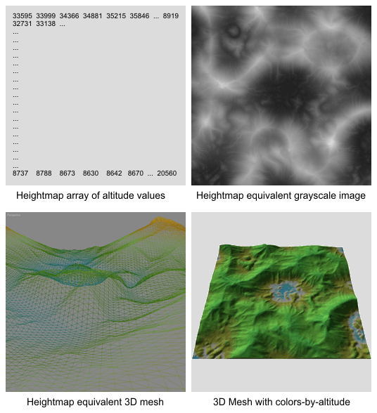
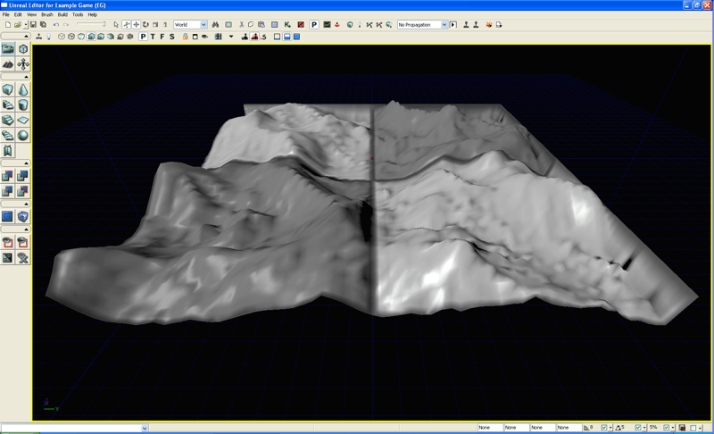
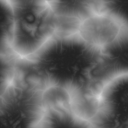

?�레???�이?�맵: ?�레?�에 ?��??�서 만든 ?�이?�맵 ?�용?�기
개요
Unreal Engine 3?? ?�덕�?골짜기�? 만들�??�해 ?�레??메쉬??직접 ?�으�? ?�인?�하�? ?��??�서 ?�작???�이?�맵 ?�일??UnrealEd??G16 비트�??�는 T3D 메쉬 ?�식?�로 가?�오?�하??방법??2 가지 ?�레???�자??기술??지?�합?�다.
UE3???�레??객체??Display.DrawScale �?Display.DrawScale3D.X/.Y ?�성???�해 지?�되???�정??XY 간격??가�??��? 3D ?�면 메쉬 그리?�입?�다. ?�레?�는 ?�정??XY 간격???�용?�기 ?�문???�일 ?�면???�면 결합???�한 메쉬???�각???�의 최적?�는 지?�하지 ?�습?�다. ?�라??128x128 ?�레?�에????�� 그것??구성?�는 129x129 ?�이?�맵 배열???�습?�다. ?�한 ?�정??X.Y 간격?� ?�레??객체???�해 직접 ?�작?????�고 반드??추�? 메쉬 객체�??�면??배치?�야 ?�는 ?�굴�??�버?�과 같�? 지?�적 ?�스?�을 ?��??�니?? ?�정??X.Y 간격?� ?�한 2개의 ?�점 간의 주어�??��???고도???�??만들?�질 ???�는 최�? 경사 각도�?결정?�니?? 그리??간격(DrawScale) 값이 ?�을 ?�록 ?�용 가?�한 경사??기울기�? 증�??�니?? ?�벽같�? 경사?�는 초고밀?�의 ?�레?��? ?�용?�려 ?�도?�는 ?�?�에 ?�적 메쉬가 ?�용?�야 ?�니??
�??�레??그리???�점??Z 좌표 값�? ?��???고도�?지?�하�??�해 16비트 범위(0 ~ 65535)?�에???�정?????�습?�다. ?�러??값�? ?�반?�으�?Unreal ?�집기에???�레??메쉬�??�인?�하거나 ?�는 ?�레??메쉬???�점???�당?�는 고도값을 ?�함?�는 ?�이?�맵 ?�일 가?�오기�? ?�행?�여 변경됩?�다.
?�레???�스?�에???�거리에???�더?�는 ?�각?�의 ?��? 줄이�??�해 ?�적 LOD ?��??�이?�을 ?�용?�는 ?�택???�더�?최적?��? ?�함?�니?? 카메?�에?��??�의 지?�된 거리?�서 ?�레???�분면�? ?�더?�는 ?�각?�의 ?��? 줄이�??�해 결합?�니??

?�이?�맵 개요
?�레???�이?�맵?� ?�레??메쉬???�는 �?지?�에 ?�??고도값의 x*y 배열?�니?? 비디??게임 ?�자???�도�?가???�반?�인 ?�이?�맵 ?�이?�웃?� ?�각??그리?�이�? �??�기??129x129 ?�는 257x257?� 같이 2??거듭?�곱 +1?�니?? ?�이?�맵 배열??�?값�? 마�?�??�레??메쉬 객체???�는 ?�점??Z �?고도)??직접 ?�응?�니??
?�이?�맵???�각?�하�??�해?�는 짙�? ?�색???��?????? 고도, ?�한 ?�색???��? 고도�??��??�는 ?�색�?비트맵을 ?�용?�는 것이 좋습?�다. ?�레???�이?�맵???�??가???�반?�으�??�용?�는 값의 범위??0?�서 65535??고도 범위�?지?�하??16비트?�니?? ?��? ?�인???�프?�웨?��? ?��? 비디???�댑??�?CRT/LCD 컴퓨?�는 16비트가 ?�닌 8비트 ?�색�?밖에 ?�시?????�기?�문???�이?�맵 ?�성 �??�집???�수?�된 ?�프?�웨?��? 구체?�으�??�자?�되?�습?�다.

?�이?�맵 ?�작
?�이?�맵?� 조달?�거???�러 방법???�용?�서 ?�작?????�습?�다. 가???�반?�으�??�용?�는 방법?� 비행�? ?�공 ?�성?�나 ?�주 ?�사?�에 ?�해 ?�집?�는 ?�제 ?�성??지???�이???�일???��???고도 모델(Digital Elevevation Models: DEMs)? ?�니?? ?�한, HMES, Leveller, Terragen, World Machine ?�을 ?�함???�러 ?�용 가?�한 ?�프?�웨???�용 ?�로그램???�해 ?�작?�는 컴퓨???�성???�한 "?�고리즘" ?�이?�맵???�습?�다. DEMS로�??�의 ?�이?�맵 ?�작???�??좀 ???�세???�용?� ??문서? �?참조??주십?�오.
?�고리즘???�이?�맵??UnrealEd�?변?�하????가???�반?�으�??�용?�는 ?�일 ?�식?� ?�전???�급???�프?�웨???�용 ?�로그램???�함???�부분의 ?�이?�맵 ?�프?�웨???�용 ?�로그램?�서 지?�된??Raw 16비트?�니?? Raw-16?� x*y ?�트림으�??�?�된 16 비트 raw ?�이?��? ?�함???�더 ?�는 간단???�진 ?�일 ?�식?�니?? Unreal ?�집기의 native ?�이?�맵 ?�식?� G16?�라�??�며, ?�이?�맵 ?�프?�웨?��? G16??기본?�으�?지?�하지 ?�으�?Raw-16?�서 중간 변?�이 ?�요?�니?? G16?�로??변???�구??G16Ed?� HMCS ???�수 존재?�니??
?�고리즘???�이?�맵 ?�프?�웨???�용 ?�로그램?� ?�덕�?골짜기의 기본 ?�이?�맵 ?�이?�웃???�성?�는 ??Perlin�?같�? ?�나 ?�상???�양???�이�??�고리즘???�용?�는 것이 ?�반?�입?�다. ???�이?�맵?� ?�화 침식, 빙하 ?�용 ?�의 지???�고리즘???�용?�여 ?�션?�로 ?�정?�고, ?�양???�구 기능???�용?�여 ?�집?�거??가공될 ???�습?�다. ?�이?�맵 만들기에 ?�??기능�?방법?� �??�프?�웨???�용 ?�로그램마다 ?�르�??�문???�기?�는 ?�세???�명?� ?��? ?�겠?�니??
?�이?�맵?� ?�하???�레???�치 ?�상??+1???�기�?만들?�져???�니?? ?��? ?�면, 128x128???�레?�는 129x129???�이?�맵???�요?�고, 256x256???�레?�는 257x257???�이?�맵???�요?�니?? ?�레?�에?�의 ?�치 ?�는 Terrain.NumPatchesX �?Terrain.NumPatchesY ?�래???�레???�터 ?�성?�서 ?�정?�니??

?�이?�맵??Terrain.NumPatches가 incoming ?�이?�맵 ?�상?��? ?�치?��? ?�는 기존???�레???�터�?가?�오�??�다�? ?�음�?같�? 결과가 발생?�니??
- ?�이?�맵???�상?��? Terrain.NumPatches보다 ??경우 (?��? ?�어, 257x257???�이?�맵??기존 128x128 ?�레?�에 가?�오�??�는 경우), ?�체 ?�레?�이 가?�오기된 ?�이?�맵 ?�상?�로 ?�기가 변경됩?�다.
- ?�이?�맵???�상?��? Terrain.NumPatches보다 ?��? 경우 (?? 128x128???�이?�맵??기존??128x128???�레?�으�?가?�오�??�는 경우), ?�레?�의 2개의 가?�자리�? 0 고도값에 ?��??�어 ?�래 그림??보이??것과 같이 ?�쪽�??�른�?측면???�라 ridge ?�이 ?�성?�니??

?��? ?�이?�맵 ?�프?�웨?�는 128,256�?같�? 2??거듭?�곱 ?�기???�이?�맵 ?�작밖에 지?�하지 ?�고 ?�수 ?�레???�이?�맵 ?�상?�인 129,257�?같�? 2??거듭?�곱 +1?� 지?�하지 ?�습?�다. ?�러???�이?�맵?� ?�에???�급??것과 같이 가?�오기될 ??측면??2개의 ridge ?�이 ?��??�니?? ??문제�??�결?�기 ?�해 ?�용 가?�한 2 가지 방법???�습?�다. UnrealEd??Flatten ?�구�?2개의 가?�자리�? ?�라 ?�용?�여 직접 ?�동?�로 ?�집?�거???�간??좀 걸릴 ???�음), ?�는 ?�인???�프?�웨?��? ?�환 가?�한 TIF-16�?같�? ?�식?�로 ?�이?�맵 ?�일??변?�하??복사/붙여?�기 ???�환 ?�식?�로 변?�하??기능??2??거듭?�곱?�서 2??거듭?�곱 +1�??��??�기 ?�해 가?�자�??��? ?�에 복사/붙여?�기�??�용?�여 가?�자리�? ?�집?�는 방법???�습?�다.
?�이?�맵 변?�시?�기
?�이?�맵 ?�일?� 가?�오�??�행?�기 ?�에 UnrealEd??G16 ?�는 T3D ?�식?�로 반드???�?�되거나 ?�는 변?�되???�니?? ?�이?�맵 ?�프?�웨?��? G16??기본?�으�?지?�하지 ?��?�?RAW-16 ?�는 Terragen??.ter ?�일�?같�? ?�반?�으�??�사???�식?�로 ?�보?�기?????�는 경우, G16Ed ?�는 HMCS?� 같�? ?�구�??�용?�여 ?�일??변?�될 ???�습?�다.
?�음 ?�제 ?�레?��? RAW-16?�로 ?�?�되?�고, 고도??Z�?중심?�로 16 비트 고도 범위??중앙???�레?�을 배치?�고 ?�습?�다. ???�이?�맵?� ?�제�??�요???�기 257x257???�닌 256x256?�기 ?�문?? TIF-16?�로 ?�보?�기?�고, 16 비트 ?�색�??��?지�?지?�하???�인???�프?�웨?�에???�집?�야 ?�니?? ?�절??257x257 ?�기가 ?�도�??�른쪽과 ?�래쪽을 1?��? ?��??�여 TIF-16?�로 ?�시 ?�?�한 ?�음, G16?�로 ?�시 변?�됩?�다.

UE3�?가?�오기된 ?�이?�맵?� 메쉬�??�이?�맵 ?�단??걸쳐 ?�의 x 방향?�로 ?��??�키�??�이?�맵???�래�??�해 ?�의 y 방향?�로 ?��??�켜 ?�레???�터가 ?�이?�맵???�쪽 ?�단???�치?�도�??�니??

참고: 가?�오�?과정 �?맵에 ?�로???�레???�터�??�동?�로 만들?�면, 1, 2 ?�계�?건너?�고 4 ?�계?�서 "Into Current" 체크?�자�??�택?��? ?�습?�다.
1. 맵에 ?�레???�터�??�입?�니??
2. ?�레???�터??Terrain.NumPatchesX?� Terrain.NumPatchesY�??�이?�맵 G16 ?�일 -1 ?�기�??�정?�니?? ?��? ?�면, ?�이?�맵??129x129?�면 NumPatches 값을 128�??�정?�니??
3. ?�빛???��??�이?�하�??�해 �??�점??DirectionalLight�??�입?�니?? Movement.Rotation.Pitch�?-45?�로 변경하�?Movement.Rotation.Yaw�?45?�로 변경합?�다.
4.
?�???�자가 ?�시?�게 ?�려�?Terrain Edit 모드�??�동?�십?�오.
5. ?�요???? ?�레???�성?�서 Display.DrawScale3D.X, .Y, .Z 값을 조절?�여 ?�레?��? ?�바�??��??�이 ?�게 ?�니??
가?�오기된 ?�이?�맵?� 가?�른 ?�선?�나 계곡?�로 ?�해 직각 방향?�로 ?�르???�분면에?�의 ?�각???�이??가?�자리인 ?�더???�면?�서 부?�러??질감???�고 ?�각?�으�??�상??모양??종종 보입?�다. ?�러??것�? ?�레??메쉬??45??각도�??�선�?골짜기의 방향???�라 ?�어??"???� 비슷??모양?�로 ?��??�니??
?�선�?골짜기에 ?�오??"??�??�듬기하?�면 ?�레???�이???�스처링???�용?�기 ?�에 기본 ?�색 "null" 바둑???�스처�? ?�더링되???�점?�서 ?�각?�의 모서�?방향??바꾼??것이 보통 가??간단??방법?�니?? Terrain.MaxTesselationLevel�?Terrain.MinTesselationLevel�?모두 1�??�정?�니?? "?? ?�상???�선�?골짜기의 ?�치�??�인?�니?? ?�들?� 기본 ?�색 ?�스처에 ?�영???�이?�몬??모양???�영 ?�문???�게 ?�인?????�습?�다.
?�???�자???�Orientation Flip???�구�??�용?�여 ?�러???�영 지??�� ?�형?????�까지 브러?��? ?�용?�니??